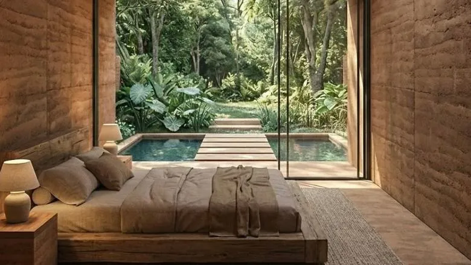
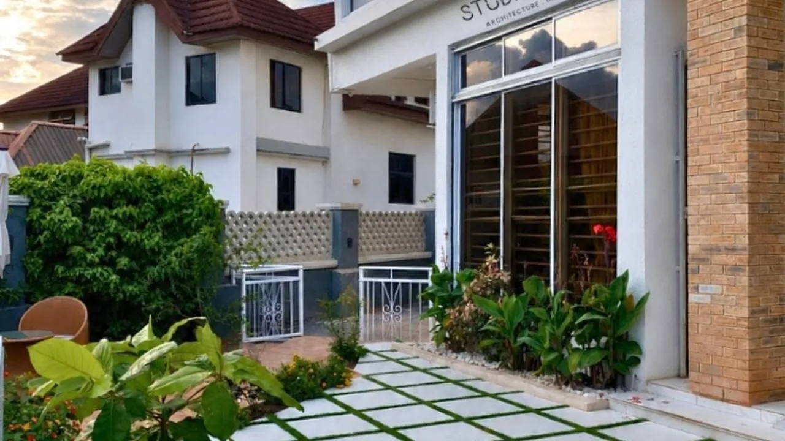

01 / Air
Make room to breathe.
Shaded openings and cross-ventilation put comfort at the centre.
Architect / Designer / Speaker / Researcher
Crystal Kizor is a Nigerian architect, designer, speaker and researcher based in Lagos, designing for the reality that exists—with climate-responsive thinking at every scale.
Furniture & product design
Everyday objects.
Rooted here.
Contemporary furniture and product design rooted in African context, materials and ideas. A consideration of how we sit, gather and live—with care for what we make and what it leaves behind.

Architecture / Interiors / Construction
Thoughtful, climate-responsive architecture, interior design and construction. Designing with the light, air, materials and realities of a place—not against them.
Commission with Studio COKA ↗
Conceptual climate study / Air + shade
Comfort begins with the climate.
Illustrative schematic / Not a project drawing / NTS
01 / Air
Shaded openings and cross-ventilation put comfort at the centre.
02 / Light
Daylight, shade and orientation inform the spatial response.
03 / Context
Material choices and everyday use belong in the spatial conversation.
Education & media
Architecture education and media that connect design thinking with the realities of practice. A place to learn, question and grow.
Learn architecture ↗Knowledge → Practice
Conversations & exchange
Invite Crystal into conversations about architecture, design and climate-responsive thinking—from the scale of the object to the city.
Book Kizor to speak ↗Thinking → Dialogue
Crystal Kizor
An ongoing enquiry into architecture, context and the systems that shape how we live. Ideas grounded in the world as it is.
Explore Kizor's ideas ↗Observation → Insight
Two distinct initiatives, with a shared care for young people: access to opportunity, and a place to belong.
Access / Education
A chance to learn. A wider horizon.
Access to education for children and young people. AKO Alliance is a path for those who want to support learning and help make opportunity more accessible.
Support AKO Alliance ↗Faith / Community
Rooted in faith. Alive in community.
A Christian youth movement centred on faith and community. A distinct space for young people to connect, grow and explore a life of purpose together.
Explore Alive and Free ↗Next step / Find your way
One person. Different ways to build something that matters.